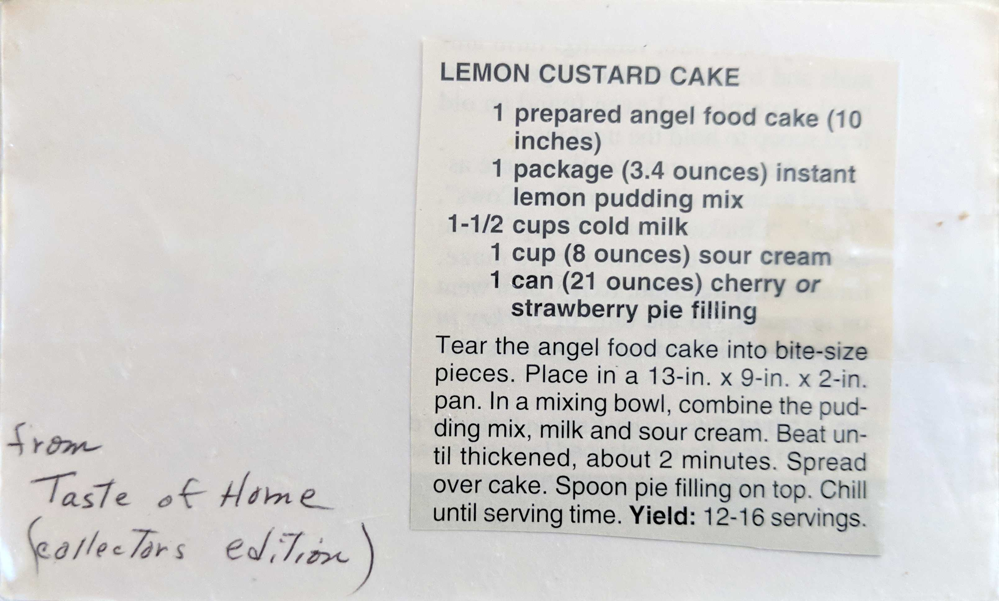

Lemon Custard Cake
1 prepared angel food cake (10 inches)
1 package (3.4 ounces) instant lemon pudding mix
1-1/2 cups cold milk
1 cup (8 ounces) sour cream
1 can (21 ounces) cherry or strawberry pie filling
Tear the angel food cake into bite-size pieces. Place in a 13-in. x 9-in. x 2-in. pan.
In a mixing bowl, combine the pudding mix, milk, and sour cream. Beat until thickened,
about 2 minutes. Spread over cake. Spoon pie fillilng on top. Chill until serving time.
Yield: 12-16 servings
[from Taste of Home (collectors edition)]